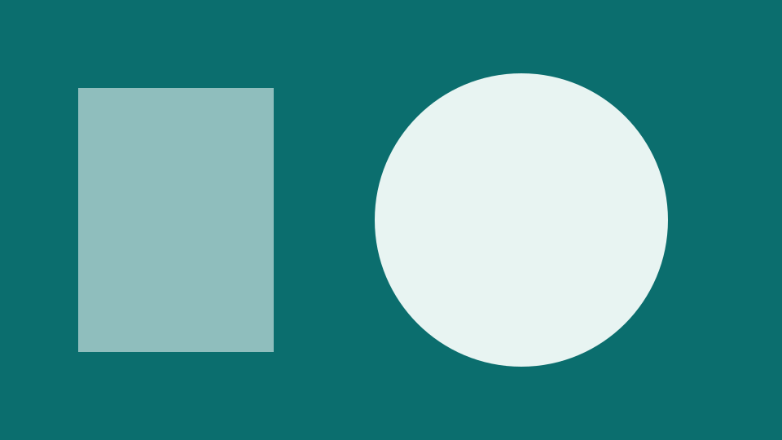
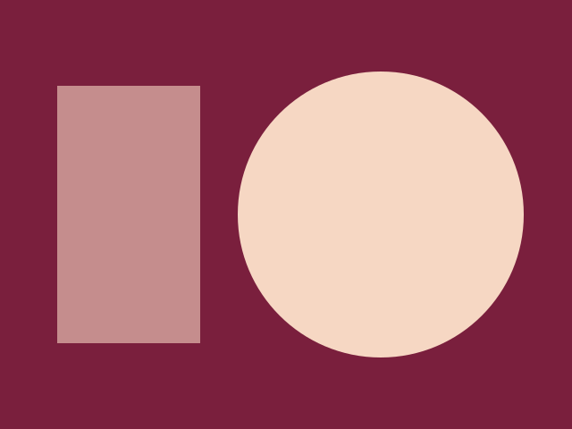
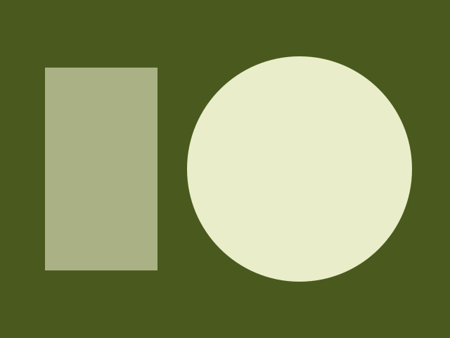
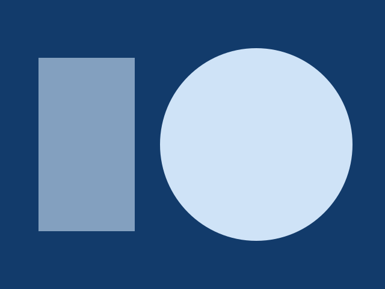
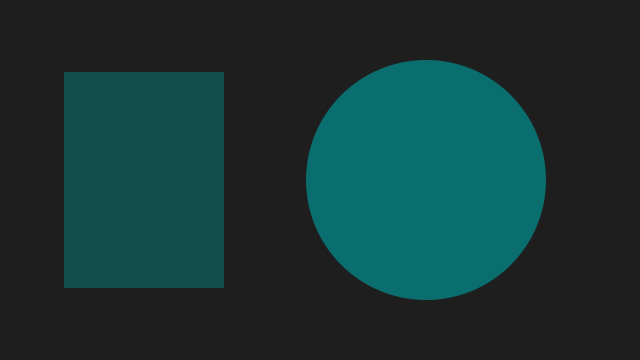

<link rel="stylesheet" href="./specimen/examples.css" />
<section class="cap-specimen" aria-labelledby="s-text">
  <h2 id="s-text">Text, lists, quotes and footnotes</h2>
  <p class="cap-muted">Headings carry a link to themselves, shown on hover and focus. Inline marks are the elements raw HTML would need.</p>
  <article data-context="prose" id="pb-text">
<h2 id="writing-for-every-site">Writing for every site<a class="heading-anchor" aria-label="Link to section: Writing for every site" href="#writing-for-every-site">#</a></h2>
<p>A paragraph with <strong>strong</strong>, <em>emphasis</em>, <code>inline code</code>, a <a href="https://example.com/network">link to the network</a> and a footnote.<sup><a href="#user-content-fn-1" id="user-content-fnref-1" data-footnote-ref aria-describedby="footnote-label">1</a></sup> Press <kbd>Ctrl</kbd> and <kbd>K</kbd> to search, read <abbr title="Model Context Protocol">MCP</abbr> as a protocol, <mark>mark a phrase</mark>, and write H<sub>2</sub>O or x<sup>2</sup>.</p>
<ul>
<li>Drafts live in Carrel.</li>
<li>Each site renders with Prelum.
<ul>
<li>Nested items keep their rhythm.</li>
</ul>
</li>
</ul>
<ol>
<li>Write the post.</li>
<li>Check it.</li>
</ol>
<ul class="contains-task-list">
<li class="task-list-item"><label><input type="checkbox" checked disabled> Alt text on every image</label></li>
<li class="task-list-item"><label><input type="checkbox" disabled> A transcript for the talk</label></li>
</ul>
<blockquote>
<p>A quotation set off from the text, in the muted color, with a rule at its start.</p>
</blockquote>
<h3 id="a-smaller-heading">A smaller heading<a class="heading-anchor" aria-label="Link to section: A smaller heading" href="#a-smaller-heading">#</a></h3>
<p>A third level is set in the interface face, as are the levels below it.</p>
<hr>
<section data-footnotes class="footnotes"><h2 class="sr-only" id="footnote-label">Footnotes<a class="heading-anchor" aria-label="Link to section: Footnotes" href="#footnote-label">#</a></h2>
<ol>
<li id="user-content-fn-1">
<p>A footnote, with a link back to where it was cited. <a href="#user-content-fnref-1" data-footnote-backref="" aria-label="Back to reference 1" class="data-footnote-backref">↩</a></p>
</li>
</ol>
</section>
  </article>
</section>
<section class="cap-specimen" aria-labelledby="s-table">
  <h2 id="s-table">Table</h2>
  <p class="cap-muted">A table scrolls inside its own box, which takes keyboard focus; numbers align right in tabular figures.</p>
  <article data-context="prose" id="pb-table">
<div class="table-scroll" tabindex="0" role="region" aria-label="Table: Site, Posts, Words, Last published"><table>
<thead>
<tr>
<th>Site</th>
<th align="right">Posts</th>
<th align="right">Words</th>
<th>Last published</th>
</tr>
</thead>
<tbody>
<tr>
<td>dustinedwards.info</td>
<td align="right">42</td>
<td align="right">61,200</td>
<td>2026-10-30</td>
</tr>
<tr>
<td>germomics.com</td>
<td align="right">18</td>
<td align="right">24,350</td>
<td>2026-10-28</td>
</tr>
<tr>
<td>julieedwards.info</td>
<td align="right">7</td>
<td align="right">9,810</td>
<td>2026-10-12</td>
</tr>
</tbody>
</table></div>
  </article>
</section>
<section class="cap-specimen" aria-labelledby="s-callouts">
  <h2 id="s-callouts">Callouts</h2>
  <p class="cap-muted">GitHub's five alerts. The title word carries the kind; the color only repeats it.</p>
  <article data-context="prose" id="pb-callouts">
<div class="callout callout-note" role="note">
<p class="callout-title">Note</p>
<p>A note with <strong>strong</strong> text and a <a href="https://example.com/notes">link</a>.</p>
</div>
<div class="callout callout-tip" role="note">
<p class="callout-title">Tip</p>
<p>Write the alt text while the picture is in front of you.</p>
</div>
<div class="callout callout-important" role="note">
<p class="callout-title">Important</p>
<p>Every episode has a transcript.</p>
</div>
<div class="callout callout-warning" role="note">
<p class="callout-title">Read this first</p>
<p>A warning with its own title.</p>
</div>
<div class="callout callout-caution" role="note">
<p class="callout-title">Caution</p>
<p>Deleting a draft cannot be undone.</p>
</div>
  </article>
</section>
<section class="cap-specimen" aria-labelledby="s-figures">
  <h2 id="s-figures">Images, figures and a gallery</h2>
  <p class="cap-muted">An image links to its original. A figure has a caption and a credit; width=wide leaves the measure. A gallery crops two to nine images to one frame.</p>
  <article data-context="prose" id="pb-figures">
<p><a class="image-link" href="./specimen/tile.svg"></a></p>
<figure class="width-wide"><a class="image-link" href="./specimen/wide.svg"></a><figcaption><p>A wide figure with a caption and its credit.</p><span class="figure-credit">Photo: Sample Archive</span></figcaption></figure>
<figure class="gallery"><ul class="gallery-grid"><li><a class="image-link" href="./specimen/one.svg"></a></li><li><a class="image-link" href="./specimen/two.svg"></a></li><li><a class="image-link" href="./specimen/three.svg"></a></li></ul><figcaption>Three pictures side by side.</figcaption></figure>
  </article>
</section>
<section class="cap-specimen" aria-labelledby="s-media">
  <h2 id="s-media">Video, audio and embeds</h2>
  <p class="cap-muted">The native players at the column's width. An embed makes no request to the service until the reader clicks; until then it is a card the size of the player it becomes, naming the service and the title. The last is an embed stored before Prelum 0.28.</p>
  <article data-context="prose" id="pb-media">
<figure class="media media-video"><video src="/media/sample-demo.mp4" poster="./specimen/poster.svg" controls preload="metadata" playsinline aria-label="A short demo"><track kind="captions" src="/media/sample-demo.vtt" srclang="en" label="English" default></video><figcaption><p>What the demo shows.</p></figcaption></figure>
<figure class="media media-audio"><audio src="/media/sample-talk.mp3" controls preload="metadata" aria-label="A talk on shared site code"></audio><p class="media-transcript"><a href="/writing/talk-transcript">Transcript: A talk on shared site code</a></p></figure>
<figure class="embed embed-youtube" id="pb-embed-video"><a class="embed-link" href="https://www.youtube.com/watch?v=dQw4w9WgXcQ" data-embed-src="https://www.youtube-nocookie.com/embed/dQw4w9WgXcQ?autoplay=1" data-embed-title="A keynote on publishing with Prelum"><span class="embed-play" aria-hidden="true"></span><span class="embed-label">Watch on YouTube: A keynote on publishing with Prelum</span></a><figcaption>A video: 16:9, the site's own poster.</figcaption></figure>
<figure class="embed embed-spotify" id="pb-embed-audio"><a class="embed-link" href="https://open.spotify.com/episode/0000000000000000000000" data-embed-src="https://open.spotify.com/embed/episode/0000000000000000000000" data-embed-title="An episode on shared site code"><span class="embed-play" aria-hidden="true"></span><span class="embed-label">Listen on Spotify: An episode on shared site code</span></a><figcaption>A song or an episode: a strip as tall as the service's player.</figcaption></figure>
<figure class="embed embed-google-maps" id="pb-embed-map"><a class="embed-link" href="https://www.google.com/maps/embed?pb=!1m0sample" data-embed-src="https://www.google.com/maps/embed?pb=!1m0sample" data-embed-title="Where the meeting is"><span class="embed-label">View on Google Maps: Where the meeting is</span></a><figcaption>A map: 4:3.</figcaption></figure>
<figure class="embed embed-bluesky" id="pb-embed-post"><a class="embed-link" href="https://bsky.app/profile/did:plc:aaaaaaaaaaaaaaaaaaaaaaaa/post/aaaaaaaaaaaaa" data-embed-src="https://embed.bsky.app/embed/did:plc:aaaaaaaaaaaaaaaaaaaaaaaa/app.bsky.feed.post/aaaaaaaaaaaaa" data-embed-title="A post about the release"><span class="embed-label">View on Bluesky: A post about the release</span></a><figcaption>A post (X, Bluesky, Instagram): 4:5, as wide as the service draws one.</figcaption></figure>
<figure class="embed embed-tiktok" id="pb-embed-upright"><a class="embed-link" href="https://www.tiktok.com/@sample/video/1000000000000000000" data-embed-src="https://www.tiktok.com/player/v1/1000000000000000000?autoplay=1" data-embed-title="A minute on the new release"><span class="embed-play" aria-hidden="true"></span><span class="embed-label">Watch on TikTok: A minute on the new release</span></a><figcaption>An upright video: 9:16.</figcaption></figure>
<figure class="embed embed-youtube" id="pb-embed-stored"><a class="embed-link" href="https://www.youtube.com/watch?v=dQw4w9WgXcQ" data-embed-src="https://www.youtube-nocookie.com/embed/dQw4w9WgXcQ?autoplay=1" data-embed-title="A talk stored before Prelum 0.28">Watch on YouTube: A talk stored before Prelum 0.28</a></figure>
  </article>
</section>
<section class="cap-specimen" aria-labelledby="s-links">
  <h2 id="s-links">Button, bookmark, details and FAQ</h2>
  <p class="cap-muted">A button link is the primary button at a full control's height. A bookmark is a link card. Details and the FAQ work with scripts off.</p>
  <article data-context="prose" id="pb-links">
<p class="button-row"><a href="/join" class="button">Join the list</a></p>
<figure class="bookmark"><a href="https://example.com/shared" class="bookmark-link"><span class="bookmark-title">How the network shares its code</span><span class="bookmark-description">One package for every site’s publishing.</span><span class="bookmark-host">example.com</span></a></figure>
<details class="post-details" id="pb-details"><summary>Why the sources are listed</summary><p>Each claim links its source, so a reader can check it.</p></details>
<dl class="faq"><div class="faq-item"><dt>Where do drafts live?</dt><dd>In Carrel, beside every earlier version.</dd></div><div class="faq-item"><dt>Who publishes?</dt><dd>The owner, or an author for their own posts.</dd></div></dl>
  </article>
</section>
<section class="cap-specimen" aria-labelledby="s-details">
  <h2 id="s-details">Details: the plus marker, and ruled</h2>
  <p class="cap-muted">The marker is drawn: a chevron by default (above), a mono plus and minus with data-details="plus" on the article. data-details="ruled plus" draws them with no box, a rule above and below, neighbors sharing one. On paper every one is open.</p>
  <article data-context="prose" data-details="plus" id="pb-details-plus">
<details class="post-details" id="pb-details-plus-1"><summary>What a field note holds</summary><p>One observation, its date and where it was made.</p></details>
  </article>
  <article data-context="prose" data-details="ruled plus" id="pb-details-ruled">
<details class="post-details" open><summary>Getting started</summary><p>Install the package and import its stylesheet.</p></details>
<details class="post-details"><summary>Release notes</summary><p>Every change is in the changelog, newest first.</p></details>
  </article>
</section>
<section class="cap-specimen" aria-labelledby="s-manual">
  <h2 id="s-manual">The manual's parts and tables</h2>
  <p class="cap-muted">data-headings="parts" numbers each h2 as a part of the page over a rule in the ink; data-tables="manual" gives a table a heavy rule over its head and mono labels. A link in a header cell is italic, since the cell is bold already.</p>
  <article data-context="prose" data-headings="parts" data-tables="manual" id="pb-manual">
<h2 id="pb-before">Before you start<a class="heading-anchor" aria-label="Link to section: Before you start" href="#pb-before">#</a></h2>
<p>Read the field notes from the last run first.</p>
<h2 id="pb-steps">Steps<a class="heading-anchor" aria-label="Link to section: Steps" href="#pb-steps">#</a></h2>
<div class="table-scroll" tabindex="0" role="region" aria-label="Table: Step, Takes"><table>
<thead><tr><th>Step</th><th align="right">Takes</th></tr></thead>
<tbody><tr><th scope="row"><a href="#pb-before">Prepare</a></th><td align="right">10 min</td></tr><tr><th scope="row">Run</th><td align="right">45 min</td></tr></tbody>
</table></div>
  </article>
</section>
<section class="cap-specimen" aria-labelledby="s-diagram">
  <h2 id="s-diagram">A diagram drawn in the page</h2>
  <p class="cap-muted">One inline SVG whose parts read the page's colors, so one drawing serves both themes: nodes in their tones, a glyph in its node's color, connectors and arrow heads, labels, a dashed baseline, and the credit under it.</p>
  <article data-context="prose" id="pb-diagram">
<div class="blog-diagram-block">
<figure class="blog-diagram" role="img" aria-label="Diagram: a draft is checked, then published or sent back. Draft points to Checks, which points to Published, or back to Draft when a check fails.">
<svg xmlns="http://www.w3.org/2000/svg" viewBox="0 0 520 120" width="520" height="120">
<defs><marker id="pb-arrow" viewBox="0 0 10 10" refX="9" refY="5" markerWidth="6" markerHeight="6" orient="auto-start-reverse"><path class="arrow-head" d="M0 0 L10 5 L0 10 Z"/></marker></defs>
<g class="node-neutral"><rect x="4" y="20" width="132" height="56" rx="8"/><text class="label-primary" x="70" y="46" text-anchor="middle">Draft</text><text class="label-secondary" x="70" y="62" text-anchor="middle">Alex Rivera</text></g>
<path class="connector" d="M136 48 H190" marker-end="url(#pb-arrow)"/>
<g class="node-info"><rect x="192" y="20" width="132" height="56" rx="8"/><path class="glyph" d="M214 48 l6 6 l12 -12"/><text class="label-primary" x="270" y="52" text-anchor="middle">Checks</text></g>
<path class="connector" d="M324 48 H378" marker-end="url(#pb-arrow)"/>
<g class="node-success"><rect x="380" y="20" width="132" height="56" rx="8"/><text class="label-primary" x="446" y="52" text-anchor="middle">Published</text></g>
<path class="connector quiet" d="M258 76 V100 H70 V78" marker-end="url(#pb-arrow)"/>
<text class="label-secondary warning" x="164" y="114" text-anchor="middle">a check fails</text>
<line class="baseline" x1="4" y1="10" x2="512" y2="10"/>
</svg>
</figure>
<p class="blog-diagram-credit">Drawing: Sam Lee, for example.com.</p>
</div>
  </article>
</section>
<section class="cap-specimen" aria-labelledby="s-site-look">
  <h2 id="s-site-look">A site's own reading look, by tokens</h2>
  <p class="cap-muted">The same blocks with a site's tokens set where it puts data-context="prose": a muted body with bold and headings in the ink, the interface face for headings, roomier blocks, colored list markers, an italic quote with an accent rule, inline code in the accent, rounder blocks and images.</p>
  <article data-context="prose" class="specimen-site-look" id="pb-site-look">
<h2 id="pb-look-heading">Field notes<a class="heading-anchor" aria-label="Link to section: Field notes" href="#pb-look-heading">#</a></h2>
<p>A paragraph in the muted body, with <strong>a bold phrase in the ink</strong> and <code>inline code</code>.</p>
<ul>
<li>A marker in the site's accent.</li>
<li>Jordan Park wrote the second item.</li>
</ul>
<blockquote>
<p>A quotation in italics, its rule in the accent.</p>
</blockquote>
  </article>
</section>
<section class="cap-specimen" aria-labelledby="s-code">
  <h2 id="s-code">Code</h2>
  <p class="cap-muted">A titled block, and a plain one. Sites that highlight get shiki's two themes, picked by the page's theme, and a marked line has a rule at its start as well as a band. The space at the top of a highlighted block (Prelum's pre[data-lang]) is kept for the language name and the Copy button that render/enhance adds, so the page does not shift when they arrive; a plain block keeps no room. The last block is one render/enhance has decorated.</p>
  <article data-context="prose" id="pb-code">
<figure class="code-frame"><figcaption class="code-title">render.ts</figcaption><pre tabindex="0" role="region" aria-label="Code: render.ts" data-lang="ts" id="pb-pre-lang"><code class="language-ts">import { render } from "@drdustinedwards/site-helpers/render";
const { html } = await render({ file, body, resolveImage });
export default html;
</code></pre></figure>
<pre tabindex="0" role="region" aria-label="Code" id="pb-pre-plain"><code>plain code, no language
</code></pre>
<pre tabindex="0" role="region" aria-label="Code: sh" data-lang="sh" data-enhanced id="pb-pre-enhanced"><code>npm run check
</code><span class="code-lang" aria-hidden="true">sh</span><button type="button" class="code-copy" aria-label="Copy code to clipboard">Copy</button></pre>
  </article>
</section>
<section class="cap-specimen" aria-labelledby="s-editorial">
  <h2 id="s-editorial">The editorial pack</h2>
  <p class="cap-muted">A side note and a pull quote. A color swatch is in Prelum's own specimen: its chip color is a style attribute, which this site's policy refuses.</p>
  <article data-context="prose" id="pb-editorial">
<p>Prelum’s editorial pack adds a few blocks for long essays.</p>
<aside class="post-note" id="sn-1"><b class="post-note-kind">Aside</b><p>The side note sits beside the paragraph it explains.</p></aside>
<div><p>A pull quote repeats one line from the text, larger.</p></div>
  </article>
</section>
